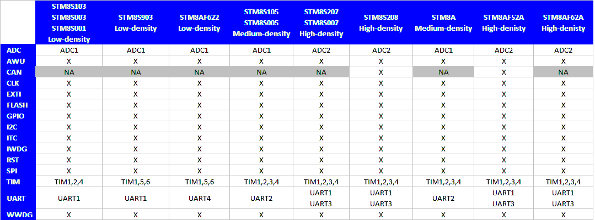

STM8S/A devices peripherals Overview
The following table presents the available peripherals set for each STM8S/A devices.
Glossary
- High-Density STM8A devices are
the STM8AF52xx STM8AF6269/8x/Ax,STM8AF51xx, and STM8AF6169/7x/8x/9x/Ax
microcontrollers where the Flash memory density ranges between 32
to 128 Kbytes
- Medium-Density STM8A
devices are the STM8AF622x/4x, STM8AF6266/68, STM8AF612x/4x, and
STM8AF6166/68 microcontrollers where the Flash memory density ranges between 8 to 32 Kbytes
- High-Density STM8S
devices are the STM8S207xx, STM8S007x and STM8S208xx
microcontrollers where the Flash memory density ranges between 32
to 128 Kbytes.
- Medium-Density STM8S devices are the STM8S105x and STM8S005x microcontrollers where the Flash memory density ranges between 16 to 32-Kbytes.
- Low-Density STM8S devices are the STM8S103x, STM8S003x, STM8S001x and STM8S903xx microcontrollers where the Flash density is 8 Kbytes.
- Low-Density STM8A devices are the STM8AF622x microcontrollers where the Flash density is 8 Kbytes.

Back to Top
Supported STM8S/A devices
The
Standard Peripherals Library supports all STM8S and STM8A family products devices. By using this library it becomes
straightforward to move the application firmware from one STM8S/A
device to another.
User has only to select
which device he will use by controlling preprocessor define declared in
stm8s.h file (No selected device by default) then the library will be configured accordingly:
stm8s.h
... /* Uncomment the line below according to the target STM8S or STM8A device used in your
application. */
/* #define STM8S208 */ /*!< STM8S High density devices with CAN */
/* #define STM8S207 */ /*!< STM8S High density devices without CAN */
/* #define STM8S007 */ /*!< STM8S Value Line High density devices without CAN */
/* #define STM8AF52Ax */ /*!< STM8A High density devices with CAN */
/* #define STM8AF62Ax */ /*!< STM8A High density devices without CAN */
/* #define STM8S105 */ /*!< STM8S Medium density devices */
/* #define STM8S005 */ /*!< STM8S Value Line Medium density devices */
/* #define STM8AF626x */ /*!< STM8A Medium density devices */
/* #define STM8AF622x*/ /*!< STM8A Low density devices */
/* #define STM8S103 */ /*!< STM8S Low density devices */
/* #define STM8S003 */ /*!< STM8S Value Line Low density devices */
/* #define STM8S001 */ /*!< STM8S Value Line Low density devices */
/* #define STM8S903 */ /*!< STM8S Low density devices */
/* Tip: To avoid modifying this file each time you need to switch between these
devices, you can define the device in your toolchain compiler preprocessor.
...
In the provided template projects within the Standard
Peripherals Library package, the appropriate device is preconfigured
and defined in the toolchain compiler preprocessor. This define will control
the declaration of the following part of the Standard Peripherals
library:
 IRQ channel
definition IRQ channel
definition
Peripheral
memory mapping and physical registers address definition
Peripheral
pointer declaration and driver header file inclusion
Product
miscellaneous configuration: external quartz (HSE) value…
Peripheral
with Features w/ different/incompatible implementation across the family
Notes: These defines impact essentially the following files: FLASH driver (stm8s_flash.c/.h files) and ITC driver (stm8s_itc.c/.h files) stm8s_it.c/.h files as the Interrupt sources are device dependent. stm8s_conf.h:
this file allows library configuration with the appropriate
peripheral drivers inclusion according to the selected device. Per
default and in the given file template, headers for all peripheral
drivers are uncommented and conditionned by the appropriate device
define Howvever
user may choose to don't use some periheral drivers in his application,
he only has to comment its related header in the stm8s_conf.h file.
Back to Top
Supported toolchains
The Standard Peripherals
Library supports the following toolchains:
 ST Visual Develop STVD ST Visual Develop STVD
Embedded
Workbench for STM8 EWSTM8
Raisonance
Integrated Development Environment RIDE
Refer to Release_Notes_for_STM8S/A_StdPeriph_Lib
for further details about the version of each supported
toolchain.
Back to Top
|
For
complete documentation on STM8S 8-bit Microcontrollers
platform visit www.st.com
|
|